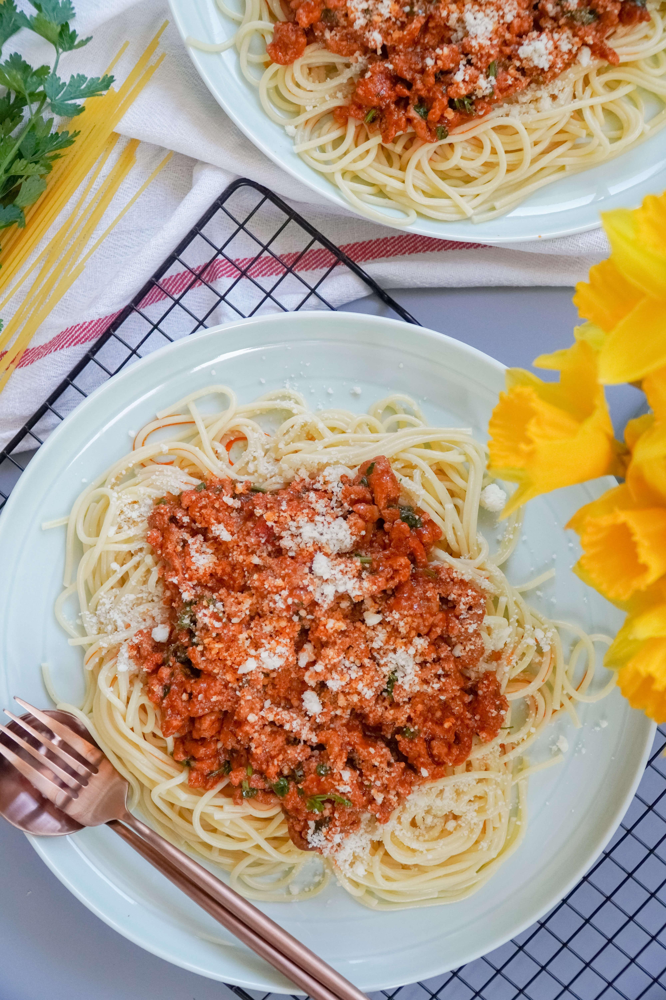

Bolognese

Description
This is a classic Italian dish. It consists of spaghetti and a rich tomato sauce with minced meat and vegetables.
Duration: 3 hours
Ingredients
The following declarations are measured for 4 portions
Steps
- We prepare the tomatoes: Brin a pot of water up to the boil. Carve an x into the bottom of each tomato and put them in the boiling water for about 2 minutes or until the skin starts to bulge around the x. Take them out and rinse them in cold water. You can peel the skin off easily, remove the stalk and mince them. Put the minced tomatoes aside for now.
- While you cook the tomatoes you can prepare the other vegetables:
Always wash you vegetables before using them!
Mince the garlic cloves and the onion, peel the carrots and slice them and the celery. Put oil in a frying oan and put the garlic and the onions in over medium high heat. After searing for 5 minutes put the rest of your vegetables in. Over high heat add just a dash of vine.
- Now take the meat and put it into the same frying pan. Pour the milk over the meat and stir well until the milk has dissolved into the meat. Now generously add salt and pepper to the meat (and vegetables).
- Add the rest of your wine. After the wine has reduced to 2/3, add your tomatoes. stir well, and put a lid on the pan. Over low heat cook for 4h or more. Check from time to time if the heat is low enough.
- When the sauce is finished you can cook your pasta: Fill a pot with water an salt it like the ocean. Put your pasta in and cook it for about 7 minutes. (this may vary depending on the type of pasta you use!)
- When you pasta is al dente, take it out of the water and put it into the bolognese sauce. Take some of the salted pasta water with.
- Now mix the sauce and the pasta and you are ready to plate
- Grate some Parmigiano to your liking over the plated spaghetti. You are ready to serve.
Jump to top of page